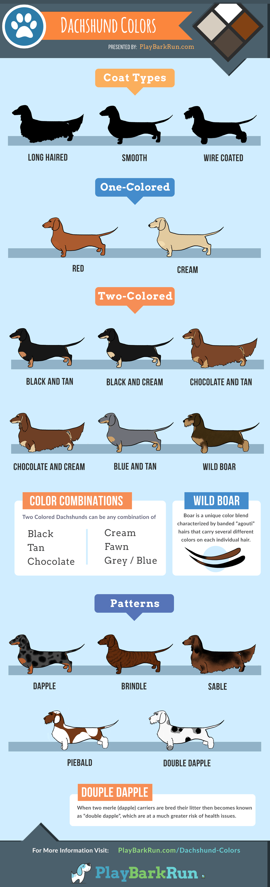

Colors
Combining the different hair types, colors,
and patterns gives us a massive variety of appearances within the dachshund breed.
However, some colors and patterns have related health concerns. We’ll take a closer look.
If you’re just curious what the different colors are – keep scrolling down.
Colors: Black, Black & Tan, Chocolate & Tan, Blue & Tan, Chocolate & Cream, Cream, Tan, Red
